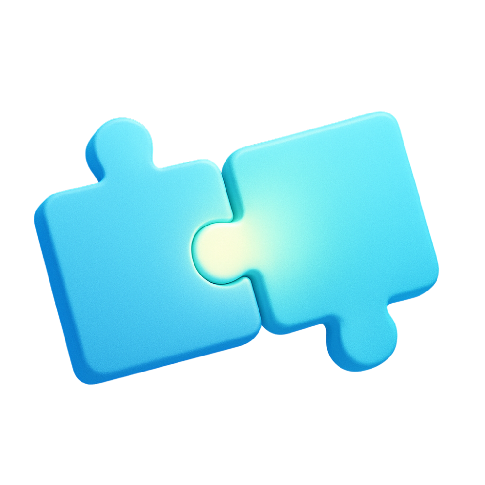
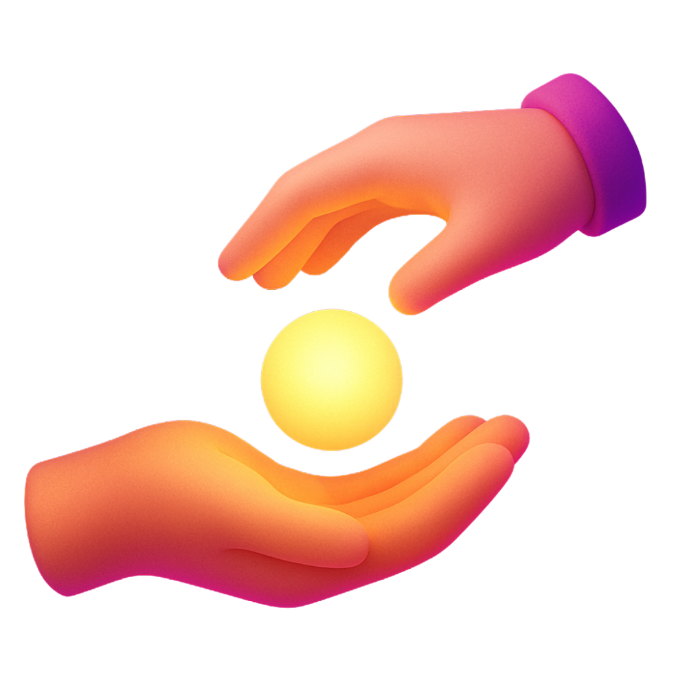
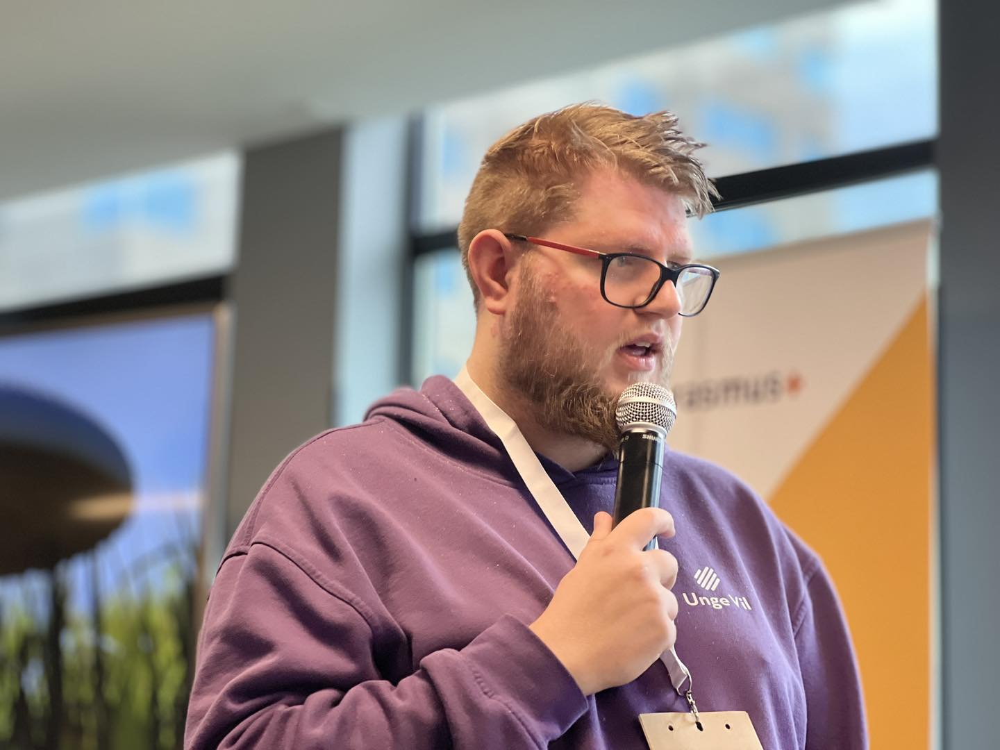

🚧 Under utvikling
Atlas er et levende prosjekt – vi utvikler og tester fortløpende og søker støtte for å bygge verktøy, kurs og dokumentasjon. Kontakt oss på org@ungevil.no.
Modulene
Bygg stein‑på‑stein eller bruk modulene hver for seg. Alt er gratis å bruke og tilpasse.
Idélab
Kreativ idéutvikling + eksperimentering.

Blanke ark
Reframing og ny start.

Forståelsesmodul
Felles forståelse og språk mellom aktører.

Gi det videre
Mentorering, rekruttering og kulturbygging.
Brukes allerede av
Et utvalg organisasjoner som tester eller tar i bruk Atlas‑modellen i prosjekter.
Et ansikt på modellen

«Etter mange år hvor vi fikk jobbe med kreativitet, utvikling og ungdom i ulike sektorer startet vi Unge Vil. Her ønsker vi å hjelpe samt fasilitere mer samarbeid mellom ulike sektorer. Med Atlas modellen er håpet og kunne lage en gratis modell som alle på tvers av sektorer kan bruke til ungdomsarbeid samt samarbeid mellom sektorer.»
Foto: Growing Youth Work – growingyouthwork.eu
Hva sier folk?
Legg inn korte sitater når pilotprosjekter går i gang.
Takk for støtte
Atlas utvikles gjennom frivillig innsats og støtte fra partnere og tilskuddsordninger.